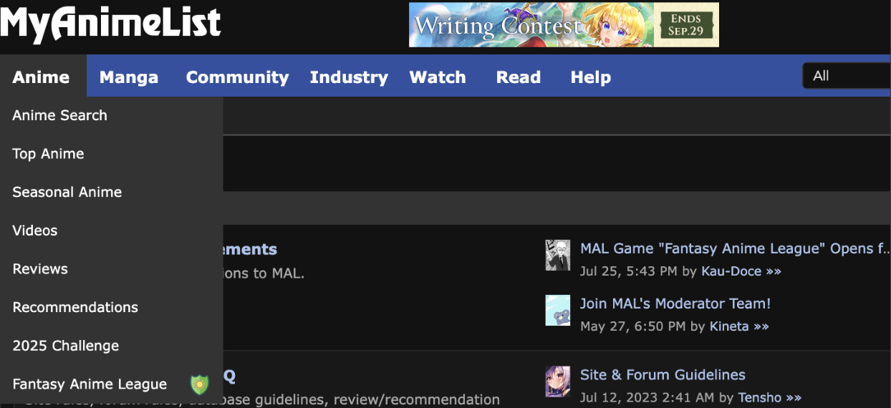
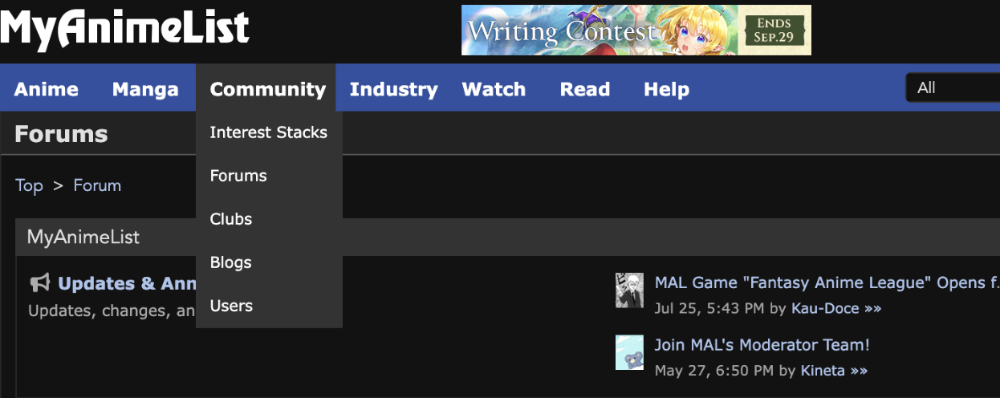
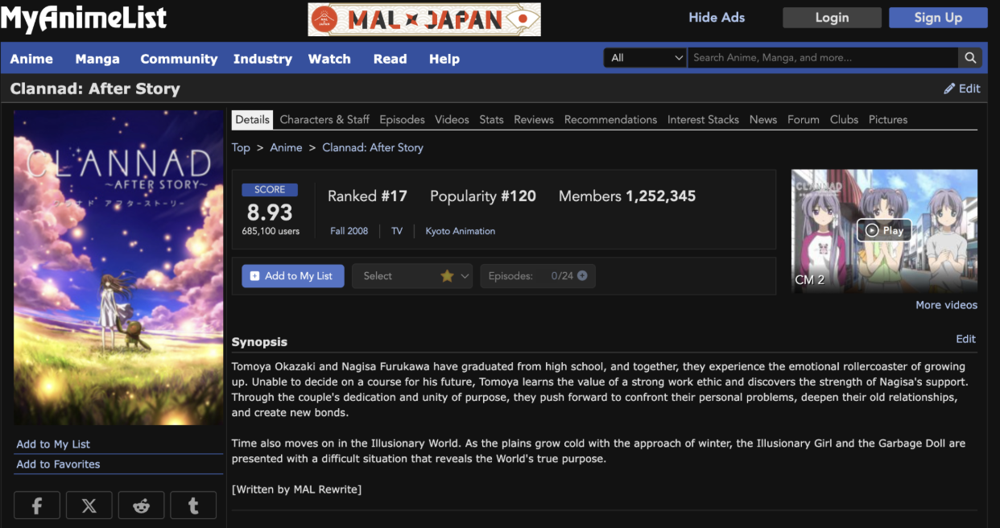
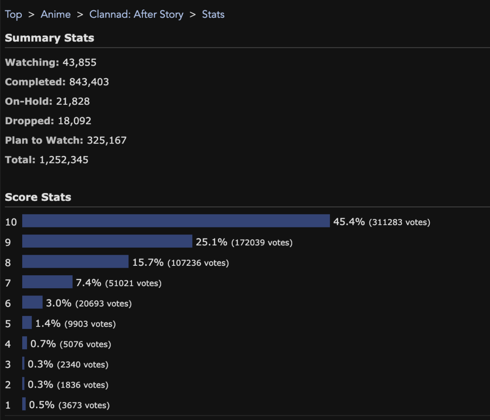
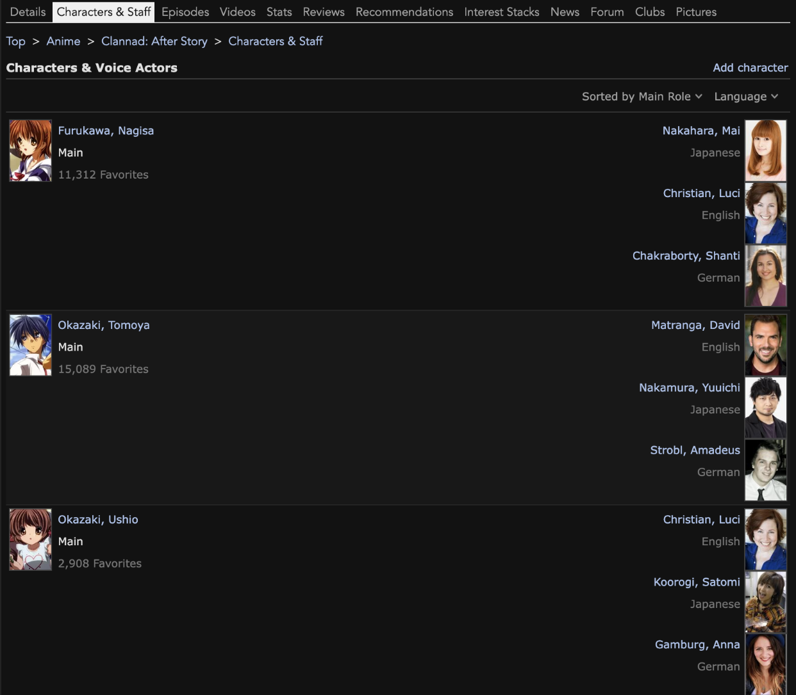
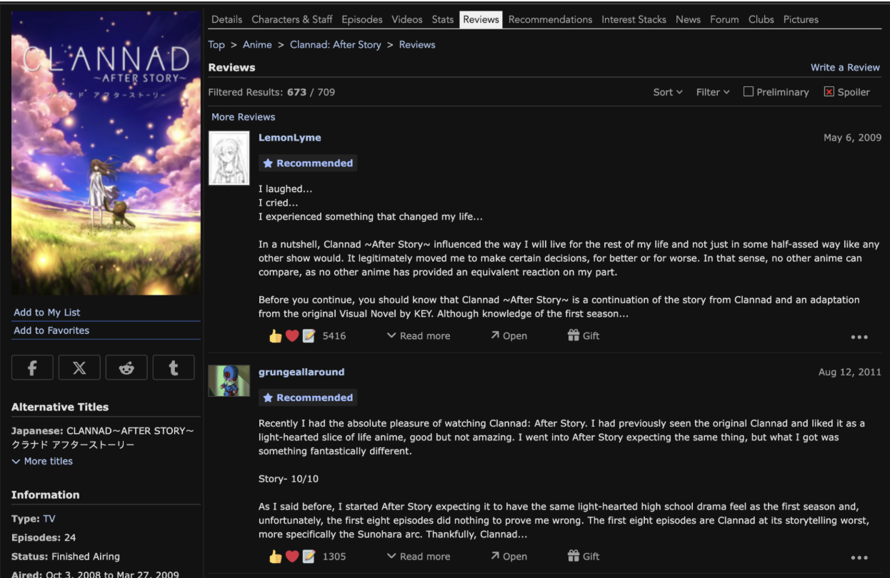
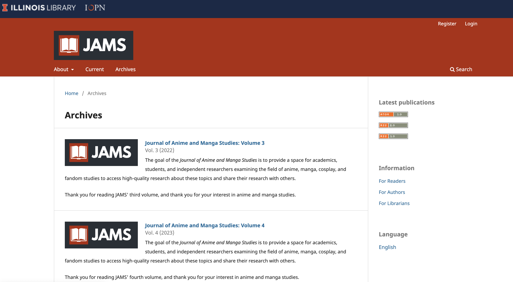
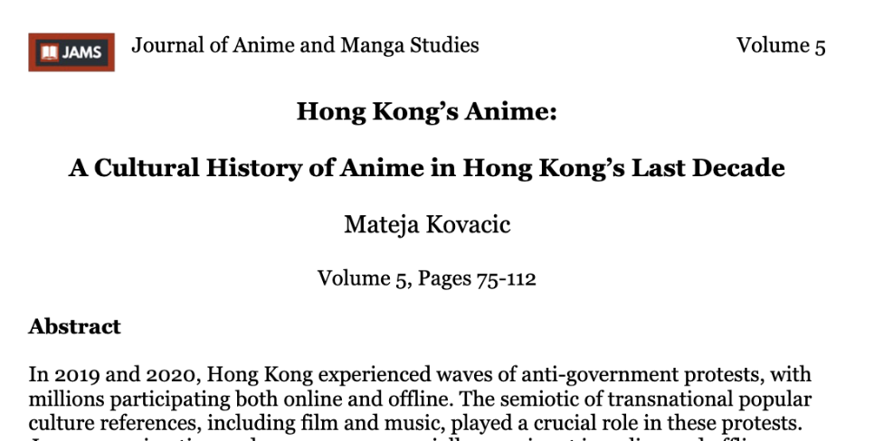
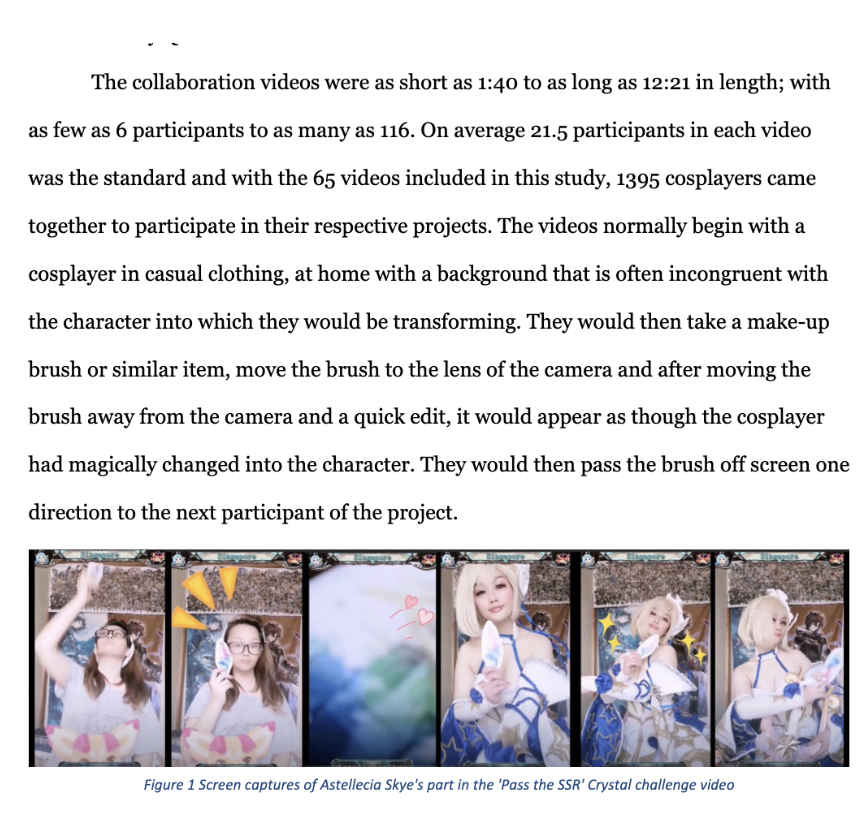

I am deeply interested in Anime and in my research for archives, I found MyAnimeList, a fan community archive. I was immediately struck by how the site seemed pretty active and had many comprehensive features including various different categories for anime, whether it be for searching for a particular anime or just finding an anime to watch.

Additionally, they had a community tab where over a staggering 18 MILLION monthly users would interact. GASP.

What stands out to me about MyAnimeList is its comprehensive lists of anime titles, seasonal shows, classics and movies. Not to mention its enormous active community where users can contribute their own thoughts and opinions on forum discussions.

When I searched up one of the earliest animes that I watched, Clannad After Story, I was surprised to find the detailed statistics of the ratings. Of the users on the site, you can see how many plan to watch the show and how many reported that they finished it. You can even get a gauge of which character is the fan favorite!

(My favorite character in Clannad is still Nagisa despite the apparent preference for Tomoya :())

Out of all this information MyAnimeList hosts on the internet, I find the most valuable of them to be the user reviews. They can help uncover how certain themes resonate with viewers across different parts of the world.

Since all reviews and recommendations are dated, we’re able to see a comprehensive picture of the community sentiment on the show and how that may shift over time. While the site succeeds as an archive with its thorough and accessible database of past animes and community discussions, MyAnimeList can be improved upon for its clunky user interface and its contextualizing of the anime contents.
From scrolling the website, it’s apparent that many users report problems with the buttons and inconsistent search results. For example, one netizen on the site notes how the search result order may differ based on which of the search functions you use. Even today, there are posts about how buttons may not work on the website.
From the example of MyAnimeList, accessibility and ease of use can help with crowd-sourcing reviews and discussions but having a well-maintained website is essential to helping keep the site comprehensive and active. If it continues to ignore these longstanding usability problems, new users may feel alienated from using the site and affect the diversity of the community knowledge without their input.
In my research, another site that I found interesting was the Journal of Anime and Manga Studies (JAMS) Archive. It provides a space for researchers and students to analyze anime with peer-reviewed articles.

When scrolling the website, I was amazed at how exhaustive the studies of anime on history and culture were. In the latest issue of the journal (Volume 5), it presents research on the history of Anime within the last decade in Hong Kong and how anime cosplay grew in popularity during the pandemic.

A strength of this archive is that JAMS provides a place to find peer-reviewed, open access articles to support scholarly research. For instance, below is a screenshot of the paper, “Cosplay Collaboration Videos: Community Interactivity in Times of Pandemic.” From quickly scanning the image, it is apparent that papers on this site provide detailed statistics in their analyses on anime impacts. With the comprehensive amount of data from this academic journal, it can aid in learning more about anime through archives by supplying objective facts about the subject’s impact. When combined with MyAnimeList’s user-sourced data, we can have a more complete context of how anime shapes and is shaped by our world.

Something that can be improved upon for JAMS is that like many newer academic journals, it is still growing its volume of research and may have limited studies on niche topics. To illustrate, in the journal’s most recent volume, I was unable to find any research on Yaoi or Josei genres. Its depth and breadth of research will be improved upon over time as more articles are published by the organization.
Some resources in class that I would like to continue to engage with are specialists in the field. For instance, when Professor Tanks invited a guest speaker to talk about her experience as an immigration lawyer, I found it very insightful how she had to learn to balance asking for information about the client while not being perceived as “too pushy.” At times, genuine human experiences and perceptions may be harder to learn about online through a screen. Additionally, I really find reading papers to be quite exciting as it condenses hundreds of hours of work that many researchers put in over a long period of time with their findings. I look forward to the next few weeks where I can dive deep into these anime archives to learn more about its history and influence.